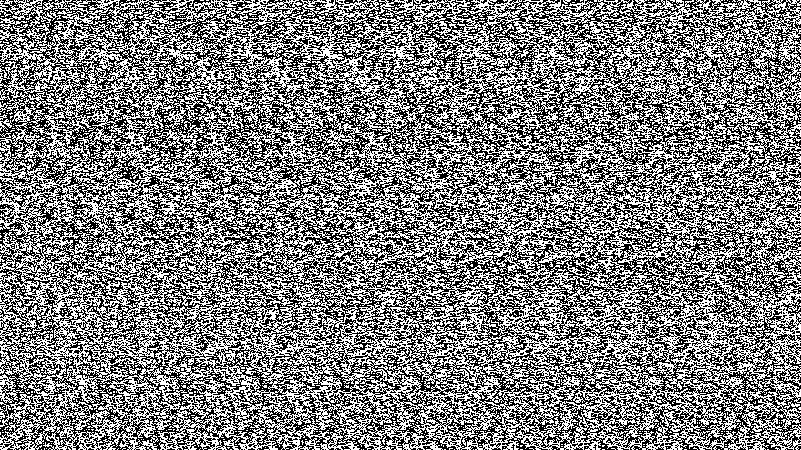

She was born in Richland, WA, bought in a feed store for $20 along with Oreo. She was a brown and black tortoise-shell american shorthair. Shadow tended to have fluffy and soft fur in the winter and a silky coat in the summer. She was a loud purrer and loved to cuddle with her family. Unfortunately, since the summer of 2014, she has not been seen.
Shadow was her owner's first cat.
She killed the most mice/birds than any other Cooper & Friends.
This is a Magic Eye of the first image shown above:
